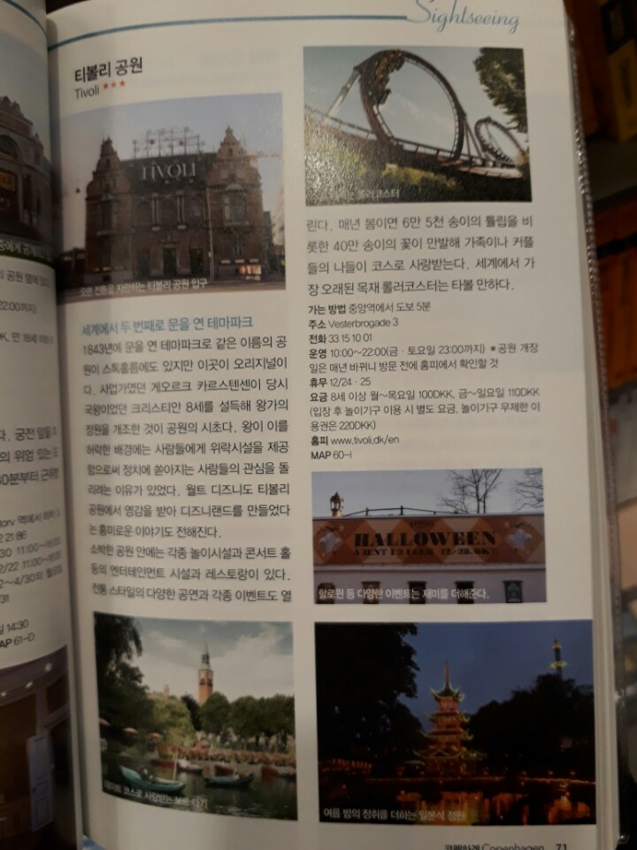
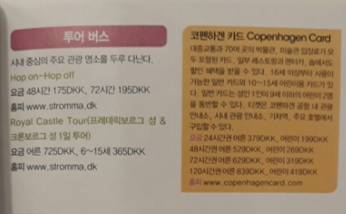

유럽 여행
유럽 이동 수단
숙소
각국 정보
독일 여행 경로
덴마크 관광지
독일 관광지-베를린
베를린 club
독일 관광지-퓌센
벨기에 관광지
프랑스 관광지
런던 여행 계획
런던 관광지
덴마크 관광지
뉘 카를스베르 미술관
티볼리 공원(테마파크)
아말리엔보르 궁전
왕립 도서관
뉘하운 항구
원형탑(전망대)
스트뢰에 거리
믿거나 말거나 박물관
코펜하겐 시내 교통(1)
코펜하겐 시내 교통(2)
코펜하겐 카드
뉘 카를스베르 미술관
티볼리 공원(테마파크)

아말리엔보르 궁전
왕립 도서관
뉘하운 항구
원형탑(전망대)
스트뢰에 거리
믿거나 말거나 박물관
푸드 스트릿 -
블로그
- 중앙역에서 버스로 갈수 있는 듯.
코펜하겐 시내 교통(1) -
정리된 블로그
코펜하겐 시내 교통(2)
코펜하겐 카드
